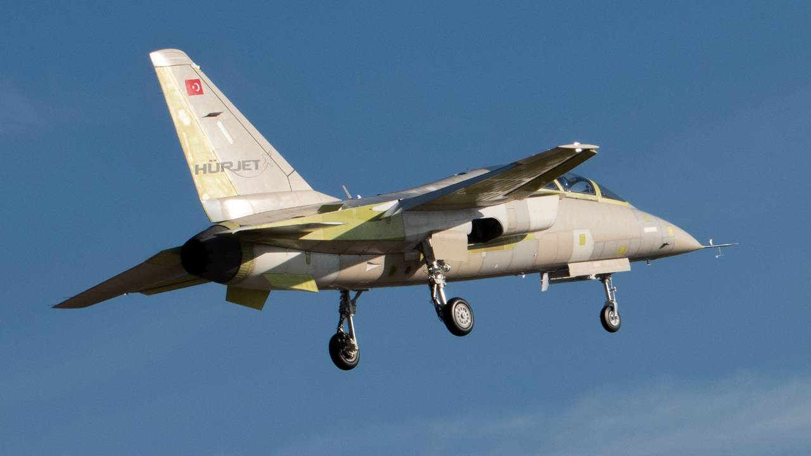

Mechanical Engineer – Structural Analysis
Jun 2021 – Dec 2024, Istanbul
Worked on the Hürjet project as a member of the vertical tail structural analysis team, Main responsibility was creating a DFEM for the whole structure, Pioneered SOL106 (geometric nonlinearity) analyses to gain better insights
about the design, Created analysis tools for processing the SOL106 data which led to thinner structures (by detecting buckling)
